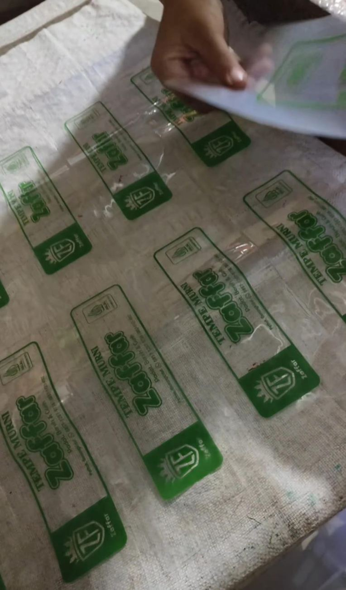
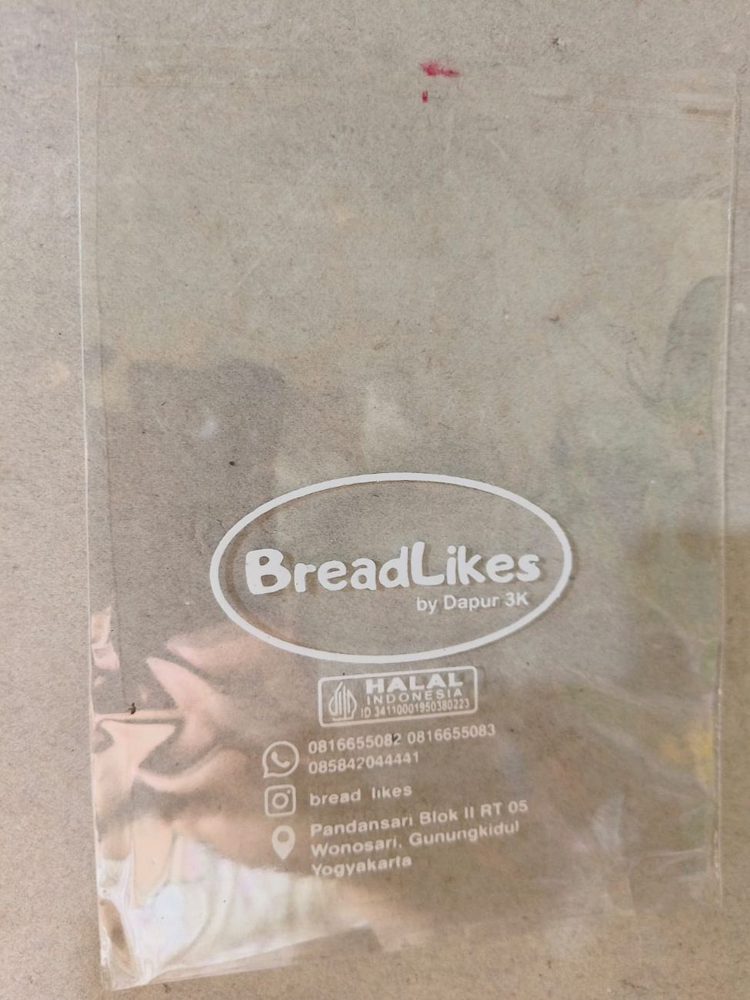
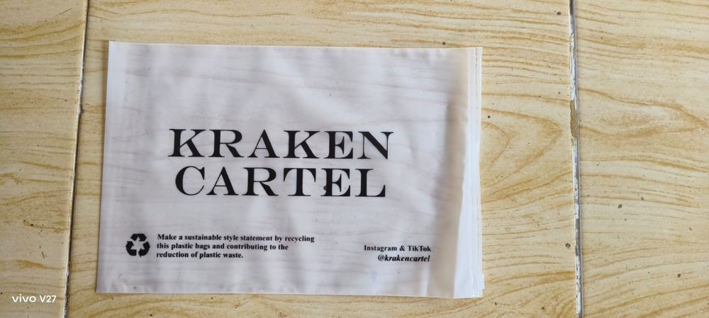
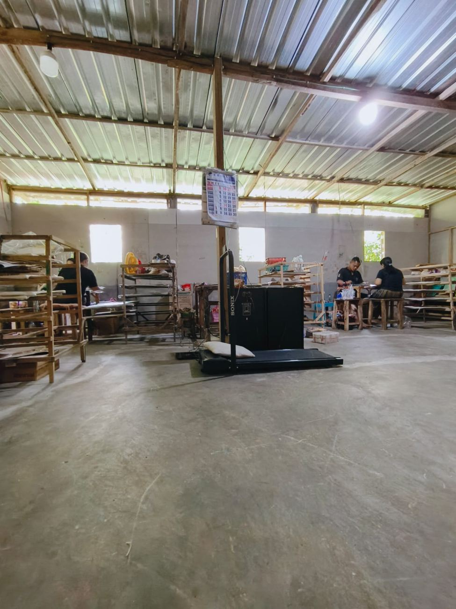
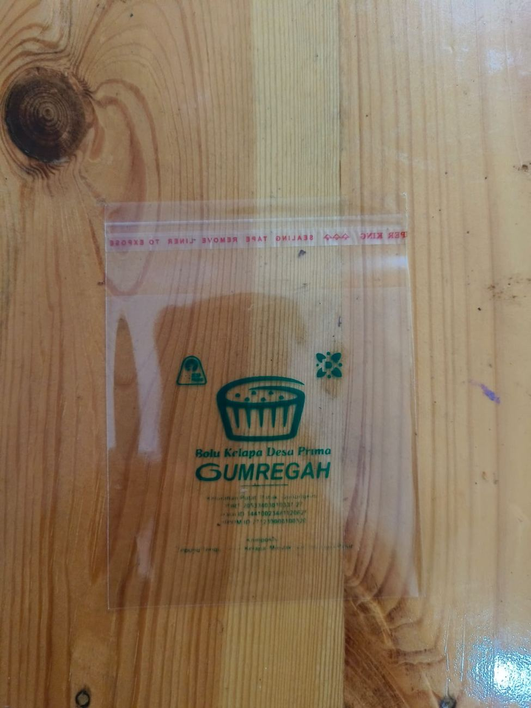

Sablon plastik rapi, sesuai pesanan.
Sablon Kembang Turi melayani sablon plastik bakery, kresek, OPP/PP, bagor pupuk/beras, plastik es, dan kebutuhan sablon plastik lainnya — teliti, ramah, harga kompetitif.
Sablon plastik untuk segala kebutuhan
Dari kemasan bakery sampai bagor pupuk — dikerjakan teliti sesuai desain yang kamu mau.
Sablon Plastik Bakery
Sablon kemasan plastik untuk roti dan produk bakery, tampil rapi dan menarik.
Sablon Kresek
Sablon kantong kresek berbagai ukuran, cocok untuk toko dan usaha jualan.
Sablon Plastik OPP/PP
Sablon plastik kemasan produk, hasil tajam dan tahan lama.
Sablon Bagor Pupuk/Beras
Sablon karung/bagor untuk kemasan pupuk, beras, dan kebutuhan curah lainnya.
Sablon Plastik Es
Sablon plastik kemasan es, dan kebutuhan sablon plastik lainnya — tanya langsung ya.
Sudah dipercaya banyak brand & UMKM
Dari kemasan tempe, bolu kelapa, minuman, sampai brand fashion — ini beberapa hasil sablon Kembang Turi.





Dikerjakan langsung, teliti tiap lembarnya


Dari Andu Print, Surakarta — sekarang di Gunungkidul
Berdiri sejak 2008 dengan nama Andu Print. Setelah pemilik menikah dan menetap di Gunungkidul, usaha ini berganti nama menjadi Sablon Kembang Turi — pindah tempat, tapi komitmen kualitasnya tetap sama.
Tahun Pengalaman
Lebih dari 18 tahun di bidang sablon plastik, sejak masih bernama Andu Print.
Pelayanan Ramah
Konsultasi kebutuhan sablon dilayani dengan ramah dari awal sampai pesanan jadi.
Pengerjaan Teliti
Tiap pesanan dikerjakan dengan penuh tanggung jawab untuk hasil yang rapi.
Harga Kompetitif
Harga bersaing tanpa mengorbankan kualitas hasil sablon.
Kunjungi langsung workshop kami
Grogol 4, RT 01/04, Bejiharjo, Kec. Karangmojo, Kabupaten Gunungkidul, Daerah Istimewa Yogyakarta
Butuh sablon plastik untuk usahamu?
Chat dulu di WhatsApp, ceritakan kebutuhan sablonmu — Kembang Turi siap bantu.
Hubungi via WhatsApp